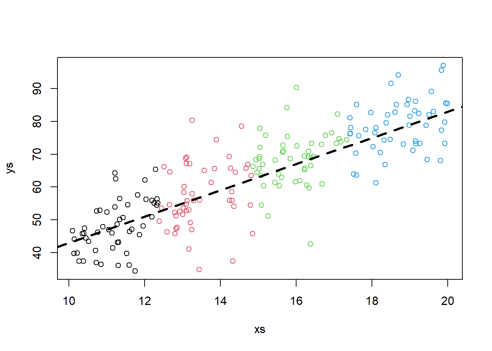
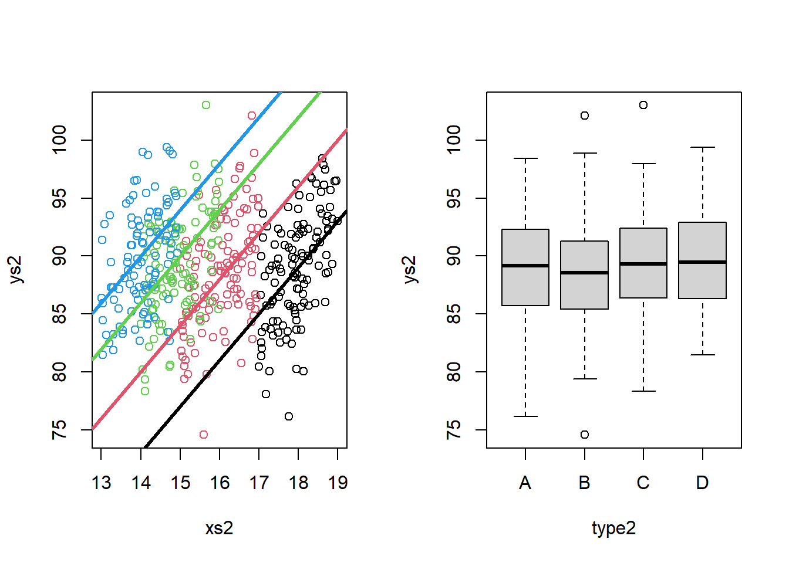

Chapter 11 Class 10: 27 10 2020
In class 10 we actually had Miguel Pais talking about Individual Based Models.
In this chapter we look again at the ANCOVA model presented in chapter 10, but under a different perspective. I decided to create this material as a bonus for students, to understand why the ANCOVA is what it is. As a bonus, this also provides a cautionary tale about the dangers of non-random sampling, or more generally, confounding due to unmeasured factors that might affect our response variable.
Therefore,
11.1 Same story, another spin
As we noted above, the ANCOVA would be an useful model to compare means of an outcome variable between two or more groups taking into account (or to correct for) variability of other variables, often called covariates. In other words, ANCOVA allows to compare the adjusted means of two or more independent groups.
Here we tell the same story from chapter 10 under said perspective. We will do so with the help of two unlikely caracters. This is the story of two friends: a biologist that is exploring the weights of lizards, and his friend, a former biology that decided to take an MSc in Ecological Statistics!
The biologist will be the hero of our story. He has a great name. George Ramsey Ernest Armitage Turner. Note that he has 5 names, unusal in the Anglosaxonic world, but not that uncommon is say Portugal. To make it easier, we’ll call him just by his initials. So… let’s call him Great :) Great’s fried, who’s a great friend, is simply called John. Boring, but hey, names aren’t something you can choose are they, and when you are just the sidekick on the story, you can’t complain!
Great when on a journey to a distant archipelago where there are 4 islands, each potentially with a different species of lizard that Great is interested in. The folks providing names to islands where not has imaginative as Great’s parents, so the islands are called just A, B, C and D. Imagine that Great did a great job and collected a great sample of lizards in each island. Great is alos interested in the amount of insects available for the lizards in each of the islands. He thinks they might determine the weight of the lizards. Weight is related to condition, condition to fecundity and survival, and so on.
Imagine Great wanted to compare the weights of lizard specimens he collected in each of the 4 islands. He happen to capture a number of animals in each island, and we will label them as A to D, as per the islands.
(note, since this is a story, this time I am not showing you how the data was created (=simulated), for narrative reasons!)
Great ploted the weights, in grams (g), of the captured lizards. These look like this:

The distribution is unimodal and about simetrical. When lizards are separated by island, they look like this

There seem to be clear differences in the weights per species, as a standard linear model (e.g. an ANOVA, see 9) will show:
##
## Call:
## lm(formula = ys ~ type)
##
## Residuals:
## Min 1Q Median 3Q Max
## -25.7066 -5.3458 -0.5474 6.2330 22.9767
##
## Coefficients:
## Estimate Std. Error t value Pr(>|t|)
## (Intercept) 48.079 1.199 40.105 < 2e-16 ***
## typeB 9.305 1.695 5.489 1.24e-07 ***
## typeC 20.254 1.695 11.947 < 2e-16 ***
## typeD 30.583 1.695 18.039 < 2e-16 ***
## ---
## Signif. codes: 0 '***' 0.001 '**' 0.01 '*' 0.05 '.' 0.1 ' ' 1
##
## Residual standard error: 8.477 on 196 degrees of freedom
## Multiple R-squared: 0.652, Adjusted R-squared: 0.6467
## F-statistic: 122.4 on 3 and 196 DF, p-value: < 2.2e-16Great is happy, he had seen differents amounts of insects in each island and so he is already thinking about a paper he will write about how the size of the lizards depends on food availability.
Further, he just had a great thought. He calls these GGTs: Great great thoughts. He is thinking about proposing that these correspond to different species in each island, and he is already dreaming about the names of his new species: he is considering naming them “slimus”, “normalis”, “fatis”, “fattissimus”, for animals in islands A, B, C and D, respectively. The plot would then read just like this, which looks… you guessed it… great.
spnames <- c("slimus", "normalis", "fatis", "fattissimus")
boxplot(ys~type,ylab="Weight (g)",xlab="Island",
names=spnames)
Unfortunately, he goes to the pub and tells John about his findings. John has been doing some modelling courses at the Univeristy and is very interested about sampling. John asks Great a great set of questions: “How did you selected the lizards you captured? What about the lengths of the lizards? Were the animals from each island of about the same length? In other words, did you control the weights for length? Because longer animals will generaly heavier, you know?”
Great had not thought about that yet, indeed. He’s feeling dizzy, might be the beers he had, might be the questions he was just asked! He rushes home and looks at the data. And in fact, the different lizards from the different islands have very different lengths to begin with, as we can see in the plot below.

##
## Call:
## lm(formula = xs ~ type)
##
## Residuals:
## Min 1Q Median 3Q Max
## -1.30243 -0.60977 -0.06891 0.52388 1.41528
##
## Coefficients:
## Estimate Std. Error t value Pr(>|t|)
## (Intercept) 11.2298 0.1034 108.55 <2e-16 ***
## typeB 2.2413 0.1463 15.32 <2e-16 ***
## typeC 4.6822 0.1463 32.00 <2e-16 ***
## typeD 7.4886 0.1463 51.19 <2e-16 ***
## ---
## Signif. codes: 0 '***' 0.001 '**' 0.01 '*' 0.05 '.' 0.1 ' ' 1
##
## Residual standard error: 0.7315 on 196 degrees of freedom
## Multiple R-squared: 0.9368, Adjusted R-squared: 0.9358
## F-statistic: 968.6 on 3 and 196 DF, p-value: < 2.2e-16In his mind Great has a vague memory of a teacher in Numerical Ecology that one should explore the data before modelling. He would have avoided this embarassement if he only had done that. Before leaving the pub he heard John saying he should look into ANCOVA’s. Something about “you need to test for the weights, accounting for differences in lengths!”.
He goes into his books and finds that ANCOVA is just a linear model, where you model a response (weight, he realizes) with a factor (island) and a continous variable (lenght).
He implements the models and, much to his despair, realizes that, once he you accounts for the length, the weights are not different per island. The damn lizards are exactly the same weight in the different islands once you account for their length… :(
##
## Call:
## lm(formula = ys ~ xs + type)
##
## Residuals:
## Min 1Q Median 3Q Max
## -27.4613 -4.7367 0.5201 4.2655 23.8079
##
## Coefficients:
## Estimate Std. Error t value Pr(>|t|)
## (Intercept) 5.3307 8.8751 0.601 0.549
## xs 3.8067 0.7838 4.857 2.45e-06 ***
## typeB 0.7735 2.3798 0.325 0.746
## typeC 2.4305 4.0058 0.607 0.545
## typeD 2.0764 6.0853 0.341 0.733
## ---
## Signif. codes: 0 '***' 0.001 '**' 0.01 '*' 0.05 '.' 0.1 ' ' 1
##
## Residual standard error: 8.027 on 195 degrees of freedom
## Multiple R-squared: 0.6896, Adjusted R-squared: 0.6832
## F-statistic: 108.3 on 4 and 195 DF, p-value: < 2.2e-16He sees his paper further and further farther away. This is what we saw: the same line explains all the data, irrespectively of group. In other words, there is not a different relationship per species between weight and length! His great ecologycal theory goes to the bin!

Now, that is dismaying, but interesting. So Great returns to the pub and he asks John: “Would the oposite be possible? Say things looked just the same, yet they were different after accounting for a confounding factor?”.
“Yes”, John replied: “I have heard about that situation, but have never seen it in a real data set before. Of course that is hard to happen, because the stars need to align. But it can happen in theory. Imagine the situation where the relationship between length and weight is different per group. However, out of a strange confounding circumstance, the observed weights happen to be similar, because we sampled (just the right, in this case, wrong!) different lengthts in each species.”
By now Great has a great headache, but he wants to see this with his own eyes, so he goes back home, sits in front of the computer, opens R and decides: “I will simulate this example”. That is what we will do here.
Imagine the following example:
The lizards relationship between weight and length is different per island. Say, akin to what we saw before. Just by magin, we have access to all the lizards in the island.
#all slopes the same, diferent intercepts - no interactions
set.seed(12345)
n<-2000
nbygroup<-500
xs <- runif(n,10,20)
island <- c("A","B","C","D")
type <- rep(island,each=nbygroup)
cores <- rep(1:4,each=nbygroup)
a<-12
b<-4
error<-4
ys <- a+b*xs+
ifelse(type=="A",5,ifelse(type=="B",12,ifelse(type=="C",18,22)))+rnorm(n,0,4)
plot(xs,ys,col=cores)
abline(12+5,4,lwd=3,col=1)
abline(12+12,4,lwd=3,col=2)
abline(12+18,4,lwd=3,col=3)
abline(12+22,4,lwd=3,col=4)
Now imagine, for the sake of argument, that in all islands we captured lizards with lengths spanning about 2 cm, but in island A we caught animals with about 18 cm, in B with about 16 cm, in c with about 15 cm and in D with about 14 cm, on average. We can simulate that non-random sampling process with respect to lenghth.
sampled.a<-which(xs>17 & xs<19 & type=="A")
sampled.b<-which(xs>15 & xs<17 & type=="B")
sampled.c<-which(xs>14 & xs<16 & type=="C")
sampled.d<-which(xs>13 & xs<15 & type=="D")
sample.all<-c(sampled.a,sampled.b,sampled.c,sampled.d)
#select a biased sample!
xs2<-xs[sample.all]
ys2<-ys[sample.all]
type2<-type[sample.all]
cores2<-cores[sample.all]
table(type2)## type2
## A B C D
## 119 116 108 100Now, if this is our sample, what happens when we look at the weights alone? First, let’s look at the previous plot with the sampled data highlighted in colors and the non sampled data greyed out.

#abline(12+5,4,lwd=3,col=1)
#abline(12+12,4,lwd=3,col=2)
#abline(12+18,4,lwd=3,col=3)
#abline(12+22,4,lwd=3,col=4)That was really not a random sample. And non-random samples always ask for trouble. Lets see what happens here. If we look at weights per island, there seems to be no effect:

If we test formally for it with an ANOVA, it seems like there is absolutely no effect of weight:
##
## Call:
## lm(formula = ys2 ~ type2)
##
## Residuals:
## Min 1Q Median 3Q Max
## -13.918 -3.137 0.035 3.142 13.648
##
## Coefficients:
## Estimate Std. Error t value Pr(>|t|)
## (Intercept) 88.9384 0.4194 212.040 <2e-16 ***
## type2B -0.4589 0.5970 -0.769 0.443
## type2C 0.4200 0.6081 0.691 0.490
## type2D 0.7764 0.6207 1.251 0.212
## ---
## Signif. codes: 0 '***' 0.001 '**' 0.01 '*' 0.05 '.' 0.1 ' ' 1
##
## Residual standard error: 4.576 on 439 degrees of freedom
## Multiple R-squared: 0.009992, Adjusted R-squared: 0.003227
## F-statistic: 1.477 on 3 and 439 DF, p-value: 0.2201This is where we need to be smart. If we conducts the correct analysis, one that includes and adjusts for the effect of length, the differences in length to weight relationship are clear. The intercepts of the different lines are all different from each other.
##
## Call:
## lm(formula = ys2 ~ type2 + xs2)
##
## Residuals:
## Min 1Q Median 3Q Max
## -12.1010 -2.8430 -0.0603 2.7281 10.9553
##
## Coefficients:
## Estimate Std. Error t value Pr(>|t|)
## (Intercept) 18.2503 6.0704 3.006 0.0028 **
## type2B 6.9837 0.8244 8.472 3.7e-16 ***
## type2C 12.1627 1.1384 10.684 < 2e-16 ***
## type2D 16.2717 1.4349 11.340 < 2e-16 ***
## xs2 3.9374 0.3375 11.666 < 2e-16 ***
## ---
## Signif. codes: 0 '***' 0.001 '**' 0.01 '*' 0.05 '.' 0.1 ' ' 1
##
## Residual standard error: 4.001 on 438 degrees of freedom
## Multiple R-squared: 0.2447, Adjusted R-squared: 0.2378
## F-statistic: 35.47 on 4 and 438 DF, p-value: < 2.2e-16Note this corresponds to comparing weights while not accounting for differences (in lengths), and comparing weights while accounting for those differences. In other words, we are interested in different intercepts in the left plot below, not in the boxplots of the right plot, that ignore the effect of length.
par(mfrow=c(1,2))
plot(xs2,ys2,col=cores2)
abline(12+5,4,lwd=3,col=1)
abline(12+12,4,lwd=3,col=2)
abline(12+18,4,lwd=3,col=3)
abline(12+22,4,lwd=3,col=4)
boxplot(ys2~type2)
Actually, what the ANCOVA model does is equivalent to looking at the data by rotating the left plot above and see it in the “axis” we care about. That corresponds to the axis such that the slope of the regression lines are aligned with the x-axis of the Cartesian referential.
I want to do this by implementing angular rotation but running out of time. That will involve implementing these transformations:
https://en.wikipedia.org/wiki/Rotation_of_axes
The plot will look just like this!

Naturally these were forced examples, caefully chosen to illustrate a point. But this was really interesting because it:
- illustrates how an ANCOVA is when we test for differences in a response (weight) as a function of a factor (island) while accounting for differences in a quatitative variable (length)
- shows the dangers of testing univariate hypothesis when several (in reality, usually many more than those we can record!) factors have an influence in the response.